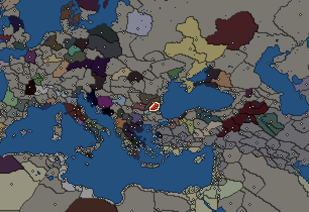
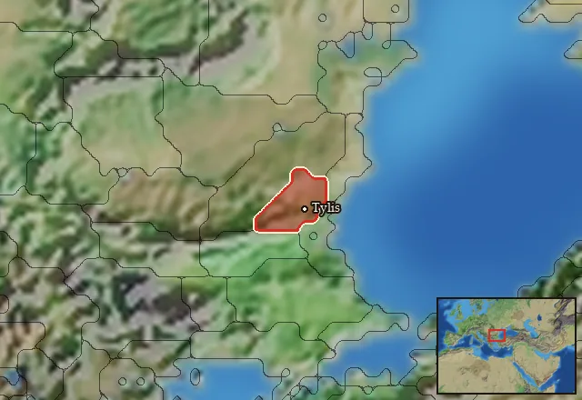

RTR: Imperium Surrectum
RTR: Imperium SurrectumTylis


- difficulty Very Difficult
- Gallic culture
- believes
 Celtic
Celtic - 1 settlement
- capital Tylis
- 4,000 manpower
- 4 characters
- 20 faction units
- 430 regional units
The campaign brief
"In spite of all, however, the Byzantines continued to bear the burden to which they had grown accustomed of the war with the Thracians, without departing from their ancient engagements to the Greek states. But when they were attacked also by the Gauls under Comontorios, they found themselves in very grave danger. These Gauls had quitted their homes together with Brennos and his Gauls, and after escaping from the disaster at Delphi reached the Hellespont, where instead of crossing to Asia, they remained on the spot, as they took a fancy to the country near Byzantium. Here when they had conquered the Thracians and had established their capital at Tylis, they placed the Byzantines in extreme danger. At first, during the inroads made under Comontorios the first king, the Byzantines continued to pay on each occasion three thousand, five thousand, and sometimes even ten thousand gold pieces to save their territory from being laid waste." – Polybios, Histories, Bk. 4, 45-46.
Tylis is the new master of Thrace! Our king Comontorios followed the steps of Cambaulès and headed for Thrace, attracted by gold, silver and slaves. Thrace is indeed a rich country, and has been frequented by Greeks for a long time. Not only did the Thracian kings try to imitate these Greeks, living in palaces and worshipping their gods in stone temples, but the whole coast is actually covered with Greek ports and other colonies. Thrace provides them with the wood, metals and slaves necessary for their continued prosperity. The Athenians would have no coins to trade with if they could not access the mines of Thrace! This land is thus a blessing, a ‘cornucopia’ as they say.
Having struck down the Triballians and the Getians, we took possession of the city of Helis and the fortress Tylis. Helis was the capital of the Getians, a prosperous city that connected Thrace to the Danube, opening up trade with the North. Let's hope that they do not try to take it back any time soon! Tylis is perfect for controlling the Greek trading posts along the coast of the Black Sea. When we first arrived in this region, we terrorized the Greeks so much that they offered us large amounts of gold to spare them. We understood that we could perpetuate this tradition to ensure our prosperity.
It was first Byzantium, then Apollonia, Kabyle, Mesembria, and finally Odessos who started to pay us important tributes. At the moment our coffers are full, but we have to beware of the Thracian kingdom of the Odrysians, who might wish to rob us of our mastery of this golden coast. In the past, they too have been paid by the Greeks to guarantee their tranquillity, for a long time. Their prosperity depends on it, as they realize all too well!
Our people are a minority in these lands. We are forced to share our beds with Thracian women, and have been forced to adopt the sons of many a Thracian noble in order to guarantee peace and maintain cohesion. Our king has understood this, our prosperity has been assured, but our legacy may be short-lived if we are not careful in the years to come. Comontorios has adopted the attributes of the Thracian monarchs, and has made their native places of worship coexist with ours. He wants to maintain a continuity, to make the natives consider him a legitimate ruler. We are thus stuck with a difficult balance, dissolution or revolt. Fortunately, prosperity is there to calm the spirits. That is, as long as we can keep making the Greeks pay for our trouble…
Homeland
Tylis's homeland is 1 region. Only there can it install the Homeland government (more on homelands).

Starting settlements
Tylis begins with 1 settlement and 4,000 manpower.
What is already built in each settlement
Tylis, in Tylisia: Small Treasury, Governor's Villa, Wooden Palisade, Homeland, Region Information Scroll, Roads, Local Barter, Lumber Camp (Rural), Slope Pasturing (Husbandry), Basic Armoury
Starting diplomacy
Allied with (2):  Byzantium ·
Byzantium ·  Galatians
Galatians
Trade agreements with (2):  Byzantium ·
Byzantium ·  Galatians
Galatians
At war with (2):  Getae ·
Getae ·  Odrysian Kingdom
Odrysian Kingdom
Like every faction, it is also at war with the  Free Peoples, who hold every settlement no faction does.
Free Peoples, who hold every settlement no faction does.
Starting characters
| Name | Role | Age | Name | Role | Age | Name | Role | Age | Name | Role | Age |
|---|---|---|---|---|---|---|---|---|---|---|---|
| Orsoaltios | General | 42 | Komontorios | General | 47 | Kerethrios | General | 43 | Kersibaulos | General | 23 |
Reforms
Open to every faction: Military innovations have arrived!, Second wave of military innovations have arrived!.
Units you can recruit
The same as in the main campaign.